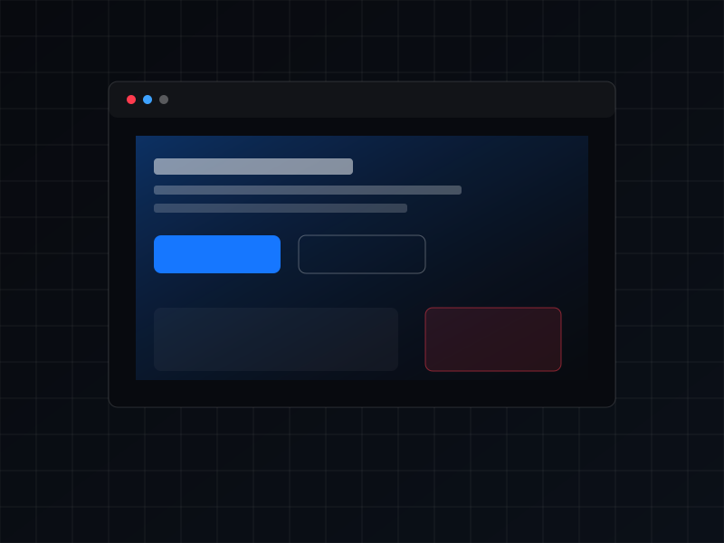

نبني أنظمة رقمية تحوّل الأفكار إلى نمو حقيقي.
تجمع CuraX بين التسويق وتطوير المواقع والبرمجيات والذكاء الاصطناعي في شريك رقمي واحد، نخدم من خلاله عملاءنا في مصر وجميع دول الخليج — شريك يستمر في النمو معك، لا ينتهي عند الإطلاق.
لا نبني مواقع فقط. نبني أنظمة نمو رقمية متكاملة.
تلتقي CuraX عند نقطة تجمع بين استراتيجية التسويق وانضباط الهندسة. نخطط للحملات بنفس الطريقة التي نخطط بها للبرمجيات — ببنية واضحة وبيانات دقيقة ومسؤول واضح عن كل نتيجة. فريق واحد يرافق الفكرة من التموضع وحتى المنتج الذي يستخدمه الناس فعلاً، دون أن يضيع شيء بين وكالات متعددة.
أربعة تخصصات. شريك واحد.
التسويق
حملات أداء مبنية على البيانات لا على التخمين — من أول نقرة إلى عميل فعلي.
تطوير المواقع
مواقع وتطبيقات سريعة ومنظمة مصممة لتمثيل العلامة التجارية وتحقيق التحويل.
البرمجيات
أنظمة مخصصة تستبدل جداول البيانات المتفرقة بمصدر واحد موثوق للمعلومات.
الذكاء الاصطناعي
المستقبل أكثر ذكاءً.
ذكاء اصطناعي مدمج في الأنظمة التي تديرها فعلاً — دعم ومحتوى وقرارات أسرع.
فريق واحد. فجوات أقل.
خبرة إبداعية وتقنية
مصممون ومهندسون يخططون معًا منذ اليوم الأول.
تسويق مبني على البيانات
قرارات مبنية على أرقام لا على الانطباعات.
حلول مخصصة
مصممة حول طريقة عمل النشاط التجاري فعلياً.
تقنيات حديثة
أدوات مختارة بعناية بحسب طبيعة المشكلة.
حلول مدعومة بالذكاء الاصطناعي
أتمتة تُطبَّق حيث توفر وقتاً حقيقياً.
عملية شفافة
نطاق واضح وجدول زمني واضح دون صناديق مغلقة.
عملية مبنية للتنفيذ.
الاكتشاف
نتعرف على النشاط التجاري والجمهور والأولوية الحقيقية.
الاستراتيجية
خطة تربط قرارات التسويق والمنتج والتقنية بهدف واحد.
التصميم
واجهات وإبداع تسويقي مبنيان على نفس النظام البصري.
التطوير
بناء نظيف ومُختبر — مواقع وبرمجيات وبنية تحتية للحملات.
الإطلاق
إطلاق مضبوط مع أدوات القياس جاهزة قبل اليوم الأول.
التحسين
البيانات الأولى تشكل الجولة التالية من التعديلات.
النمو
شراكة مستمرة، لا تسليم لمرة واحدة.
مشاريع قيد التنفيذ.

موقعإعادة بناء هورايزون للشركات
إعادة بناء كاملة لموقع شركة، مع التركيز على سرعة التحميل وهيكلة أوضح للخدمات.
 ذكاء اصطناعي
ذكاء اصطناعي
مساعد أوربت الذكي للدعم
حملات أداء مقترنة بمسار دعم مدعوم بالذكاء الاصطناعي.